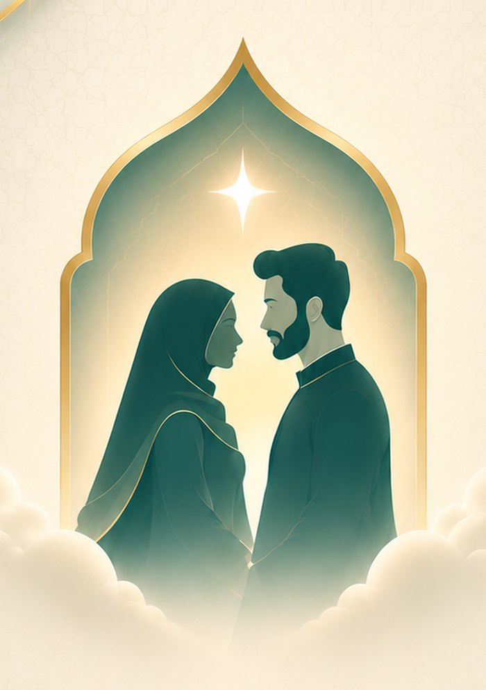

A halal way to build a meaningful connection with intention — faith-led, values-first, and built for marriage, not endless swiping.
Every part of the experience is shaped around deen first — matching, conversation, and intention all rooted in faith.
No endless swiping. Niyyah is built for people who know what they're looking for and are ready for something real.
Guardian involvement, mutual respect, and thoughtful safeguards — designed the way a halal connection should feel.
"Nurture your heart — every sincere step is growth."